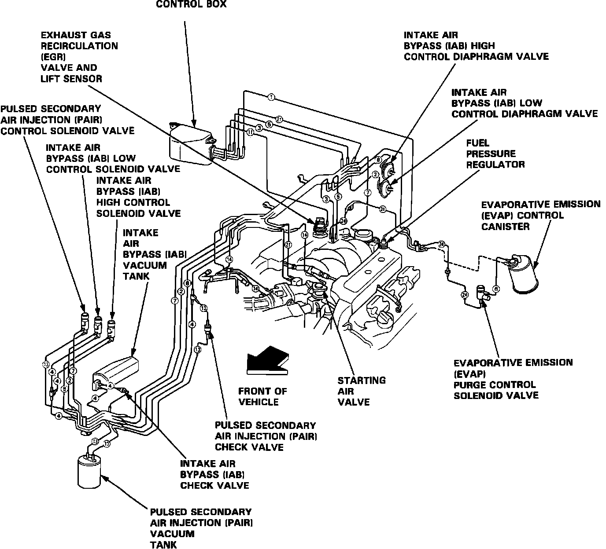
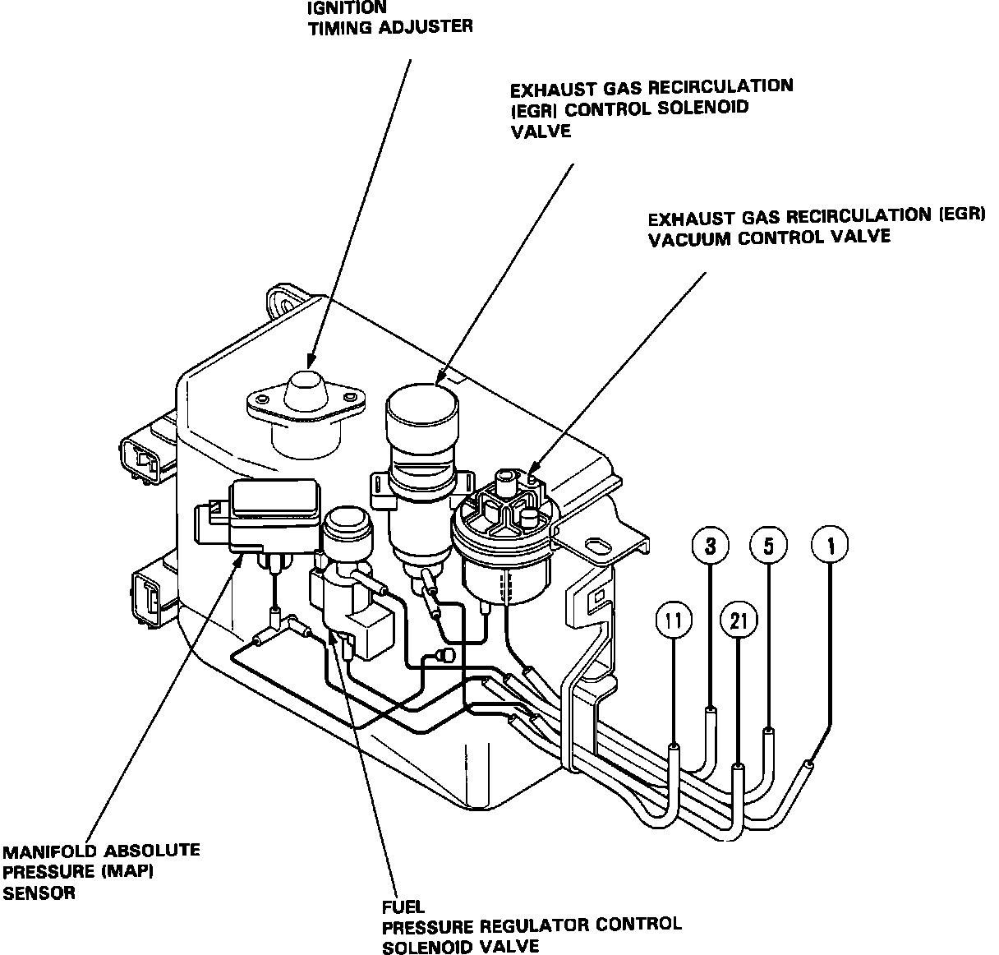
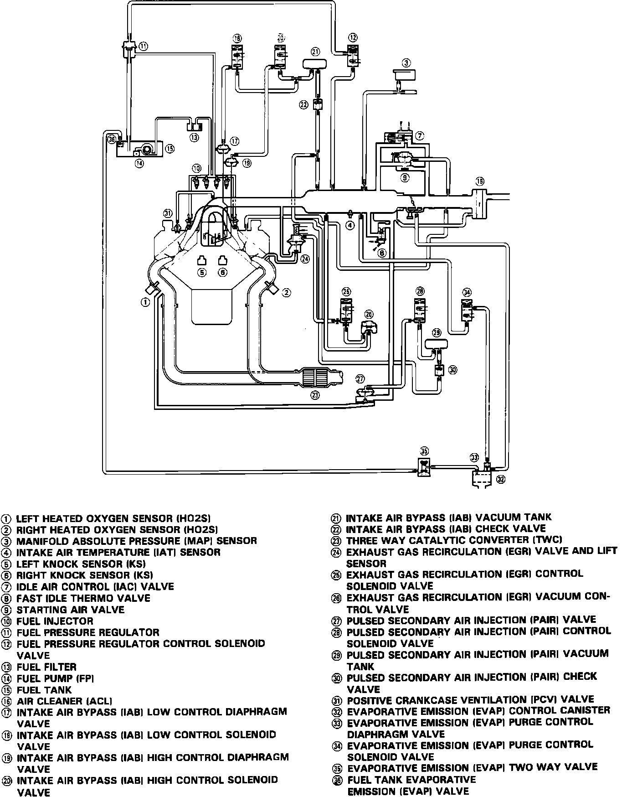

Fuel Delivery and Air Induction
Vacuum Connections:

VACUUM HOSE ROUTING
Control Box - Vacuum Connections and Component Locations:

CONTROL BOX ROUTING
Vacuum System - Schematic View:

SYSTEM SCHEMATIC


